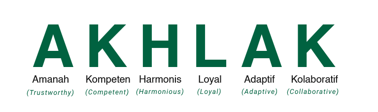

Luas dan Batas Wilayah Kerja
Perum Perhutani Kesatuan Pemangkuan Hutan (KPH) Pemalang adalah salah satu unit manajemen di wilayah Perum Perhutani Divisi Regional Jawa Tengah. Luas wilayah kerja KPH Pemalang berdasarkan PP 72 tahun 2010 tentang Perusahaan Umum (Perum) Kehutanan Negara seluas : 24.389,40 Ha berada pada wilayah administrative pemerintahan kabupaten dan kota yaitu Kabupaten Pemalang (15.895,62 Ha) dan Kabupaten Tegal (8.494,23 Ha).
Batas-batas wilayah operasional:
- Utara: Kab. Pemalang
- Timur: Kab. Pekalongan (KPH Pekalongan Timur)
- Selatan: Kab. Purbalingga (KPH Pekalongan Timur & Barat)
- Barat: Kab. Tegal (KPH Pekalongan Barat)
Kawasan, Fungsi, dan Bagian Hutan
Berdasarkan kesesuaian lahan kawasan hutan, fungsi hutan, serta pembagian Bagian Hutan (BH) berdasarkan PP 72 tahun 2010:
Kawasan Hutan
- Perlindungan 2.693,41 Ha
- Produksi 20.126,92 Ha
- Penggunaan Lain 1.569,07 Ha
Fungsi Hutan :
- HPT 4.478,62 Ha
- Hutan Produksi (HP) 19.910,78 Ha
- Hutan Lindung (HL) – Ha
Bagian Hutan (BH) :
- BH Comal 8.036,67 Ha
- BH Bantarbolang 7.858,50 Ha
- BH Jatinegara 8.494,23 Ha
Rincian 6 BKPH dan 20 RPH
Berdasarkan wilayah pengelolaan KPH Pemalang terdiri dari enam (6) Bagian Kesatuan Pemangkuan Hutan (BKPH) dan Dua Puluh (20) Resort Pemangkuan Hutan (RPH) dengan perincian lengkap di bawah ini:
BKPH Sokawati
Total: 4.452,90 Ha- RPH Sokawati 1.465,72 Ha
- RPH Mangunsari 682,72 Ha
- RPH Penggarit 786,79 Ha
- RPH Kaliwadas 1.517,67 Ha
BKPH Bantarsari
Total: 3.583,77 Ha- RPH Klapanunggal 854,36 Ha
- RPH Pabuaran 1.349,13 Ha
- RPH Karangasem 1.380,41 Ha
- - -
BKPH Slarang
Total: 3.547,35 Ha- RPH Kramat 795,06 Ha
- RPH Glandang 1.692,39 Ha
- RPH Paduraksa 1.059,90 Ha
- - -
BKPH Cipero
Total: 4.311,15 Ha- RPH Lobongkok 1.479,13 Ha
- RPH Kenyere 1.156,37 Ha
- RPH Kejene 1.675,65 Ha
- - -
BKPH Kedungjati
Total: 4.742,56 Ha- RPH Cipero 1.330,33 Ha
- RPH Dukuhtaban 1.169,66 Ha
- RPH Dukuhrandu 1.136,22 Ha
- RPH Karangmalang 1.106,35 Ha
BKPH Jatinegara
Total: 3.751,67 Ha- RPH Jatinegara 1.611,91 Ha
- RPH Winong 987,52 Ha
- RPH Wrayan 1.152,29 Ha
- - -
Sejarah Perusahaan
Jejak sejarah pengelolaan hutan di Jawa dan Madura yang terus bertransformasi untuk kelestarian ekologis dan kemanfaatan bersama.
"Sejarah pengelolaan hutan di Jawa dan Madura, secara modern-institusional dimulai tahun 1897 dengan dikeluarkannya “Reglement voor het beheer der bosschen van den Lande op Java en Madoera”, Staatsblad 1897 nomor 61 (disingkat “Bosreglement”) selain itu terbit pula “Reglement voor den dienst van het Boschwezen op Java en Madoera” (disingkat “Dienst Reglement”) yang menetapkan aturan tentang organisasi Jawatan Kehutanan, dimana dibentuk Jawatan Kehutanan dengan Gouvernement Besluit (Keputusan Pemerintah) tanggal 9 Februari 1897 nomor 21, termuat dalam Bijblad 5164".
01"Penetapan “Reglement voor het beheer der bosschen van den Lande op Java en Madoera”, Staatsblad 1913 nomor 495, yang mengatur tentang “eksploitasi sendiri (eigen beheer) atau penebangan borong (door particuliere aannemer)".
02"Terbit Bosch_Ordonnantie, termuat dalam Staatsblad Tahun 1927 nomor 221 dan peraturan pelaksanaannya berupa Bosch_Verordening 1932, nama lengkap dokumen: “Bepalingen met Betrekking Tot’s Lands Boschbeheer op Java en Madoera” yang menjadi dasar pengurusan dan pengelolaan hutan di Jawa dan Madura oleh Jawatan Kehutanan (den dienst van het Boschwezen)".
03"Pengelolaan hutan Jati diserahkan kepada badan “Djatibedrijf” atau perusahaan hutan Jati dari Pemerintah (Jawatan Kehutanan). Perusahaan hutan Jati tersebut tidak berdiri lama, karena pada tahun 1938 oleh Directeur van Financien (Direktur Keuangan Pemerintahan Hindia Belanda) dinyatakan bahwa perusahaan yang bertujuan komersiil sebulat-bulatnya harus dihentikan".
04"Pengurusan hutan Jati dari “Djatibedrijf” dikembalikan lagi ke Jawatan Kehutanan. Pada tanggal 8 Maret 1942 Hindia Belanda jatuh ke tangan Jepang (Dai Nippon), Jawatan Kehutanannya (i.c. Boschwezen) diberi nama Ringyo Tyuoo Zimusyo (RTZ)".
05"Pasca Kemerdekaan Republik Indonesia tanggal 17 Agustus 1945 dan berdirinya Negara Indonesia tanggal 18 Agustus 1945, hak, kewajiban, tanggung-jawab dan kewenangan pengelolaan hutan di Jawa".
06"Diterbitkan Pengaturan Pemerintah Pengganti Undang-Undang Nomor 19 tahun 1960 tentang Perusahaan Negara. Untuk mewujudkan perubahan status Jawatan Kehutanan menjadi Perusahaan Negara, Pemerintah mengeluarkan Peraturan Pemerintah Nomor 17 sampai dengan Nomor 30, tahun 1961, tentang "Pembentukan Perusahaan-Perusahaan Kehutanan Negara (PERHUTANI)".
07"Diterbitkan Peraturan Pemerintah Nomor 15 Tahun 1972, meleburkan PN Jawa Timur & Jawa Tengah menjadi Perum Perhutani. Pemerintah Nomor 2 Tahun 1978, menambah wilayah kerja seluruh areal hutan di Dearah Tingkat I Jawa Barat".
08"Diterbitkan Peraturan Pemerintah Nomor 15 Tahun 1972, meleburkan PN Jawa Timur & Jawa Tengah menjadi Perum Perhutani. Pemerintah Nomor 2 Tahun 1978, menambah wilayah kerja seluruh areal hutan di Dearah Tingkat I Jawa Barat".
09"Peraturan Pemerintah RI Nomor 72 Tahun 2010 dikeluarkan pemerintah Republik Indonesia sebagai dasar hukum pelaksanaan pengelolaan sumberdaya hutan di Jawa dan Madura oleh Perum Perhutani".
10"Peraturan Pemerintah RI No 73 tahun 2014 tentang Penambahan Penyertaan Modal Negara Republik Indonesia ke Dalam Modal Perusahaan Umum (Perum) Kehutanan Negara. Perum Perhutani ditunjuk sebagai induk Holding BUMN Kehutanan (Perhutani Group) dengan anak perusahaan PT Inhutani I, PT Inhutani II, PT Inhutani III, PT Inhutani IV, PT Inhutani V".
11"Perum Perhutani melakukan merger Anak Perusahaannya. Merger dilakukan pada PT Inhutani I, PT Inhutani II dan PT Inhutani III yang bergabung ke dalam entitas PT Inhutani I. Sedangkan PT Inhutani IV, PT Inhutani V dan PT Perhutani Anugerah Kimia bergabung ke dalam entitas PT Inhutani V. Selanjutnya bisnis wisata yang dikelola oleh Perum Perhutani dialihkelolakan secara bertahap kepada PT Palawi Risorsis yang berubah nama menjadi Econique.".
12"Menjadi Perusahaan Pengelola Hutan Berkelanjutan dan Bermanfaat Bagi Masyarakat"
- Mengelola Sumberdaya Hutan Secara Lestari.
- Peduli Kepada Kepentingan Masyarakat dan Lingkungan.
- Mengoptimalkan Bisnis Kehutanan dengan Prinsip Good Corporate Governance.
Budaya Kerja AKHLAK
Fondasi karakter sumber daya manusia Perhutani dalam memberikan pelayanan prima.

Komitmen SDM KPH Pemalang dalam melayani.
Struktur Organisasi KPH
Bagan hierarki manajemen dan fungsional Perum Perhutani KPH Pemalang:
Kepemilikan Saham & Prinsip Tata Kelola
Transparansi dan akuntabilitas adalah komitmen kami. Berikut informasi kepemilikan saham serta prinsip Good Corporate Governance (GCG) Perhutani.
Struktur Kepemilikan Saham
73,29%
Melalui Kementerian Badan Usaha Milik Negara (BUMN)26,71%
Kepemilikan saham oleh publik melalui pasar modalKomposisi Kepemilikan Saham
| Pemegang Saham | Jumlah Saham | Persentase |
|---|---|---|
| Pemerintah RI | 732.900.000 | 73,29% |
| Masyarakat / Publik | 267.100.000 | 26,71% |
| Total | 1.000.000.000 | 100% |
Prinsip Tata Kelola (GCG)
Transparansi
Menyediakan informasi yang akurat dan tepat waktu.
Akuntabilitas
Bertanggung jawab atas setiap keputusan dan tindakan.
Kemandirian
Mengelola perusahaan secara profesional dan independen.
Kewajaran
Memperlakukan seluruh pemegang saham secara adil dan setara.
Pertanggungjawaban
Berorientasi pada keberlanjutan dan kepatuhan peraturan.
Program Kerja Perhutani
Program kerja Perhutani berfokus pada pengelolaan hutan lestari yang terintegrasi, inovatif, dan memberikan manfaat bagi lingkungan, masyarakat, serta ekonomi bangsa.
Pilar Program Kerja
Lima pilar utama yang menjadi fondasi operasional dan arah kebijakan pengelolaan hutan secara berkelanjutan.
Pengelolaan Hutan Lestari
Menjaga keseimbangan ekosistem dan produktivitas sumber daya hutan.
- Pemeliharaan Hutan
- Perlindungan Hutan
- Rehabilitasi & Restorasi
- Inventarisasi & Monitoring
Pemberdayaan Masyarakat
Meningkatkan kesejahteraan masyarakat melalui kemitraan berkelanjutan.
- Program Kemitraan
- Pengembangan Ekonomi Desa
- Pelatihan & Pendampingan
- Tanggung Jawab Sosial
Inovasi & Teknologi Kehutanan
Mengembangkan inovasi dan teknologi untuk efisiensi pengelolaan.
- Proyek Strategis Perum Perhutani
- Riset & Pengembangan
- Teknologi Ramah Lingkungan
- Smart Forest Management
Kemitraan & Kolaborasi
Membangun kemitraan strategis dengan berbagai pihak untuk tujuan bersama.
- Kolaborasi Pemerintah
- Kemitraan Swasta
- Kerja Sama Akademisi
- Sinergi Multi-Pihak
Kinerja & Nilai Keberlanjutan
Meningkatkan kinerja perusahaan dengan prinsip tata kelola yang baik.
- Tata Kelola Perusahaan
- Manajemen Risiko
- Efisiensi Operasional
- Transparansi & Akuntabilitas
Program Unggulan
Target & Capaian 2026
Tahapan Pelaksanaan Program
Perencanaan
Analisis kebutuhan, penetapan tujuan, dan penyusunan rencana kerja yang terukur.
Pelaksanaan
Implementasi program di lapangan secara terstruktur dan terencana.
Monitoring & Evaluasi
Pemantauan berkala untuk memastikan pencapaian capaian dan kualitas program.
Pelaporan & Tindak Lanjut
Evaluasi hasil dan perbaikan berkelanjutan untuk peningkatan kinerja.